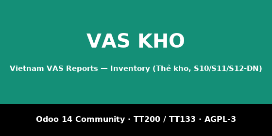

stock.valuation.layer — đúng cái Odoo đã ghi vào các TK
152 / 155 / 156, nên báo cáo kho khớp sổ cái theo bản chất, không
nhân lại số lượng với đơn giá hiện hành.l10n_vn_reports and stock_account.Part of the Vietnam VAS Reports suite for Odoo 14
Community: accounting books and financial statements
(l10n_vn_reports), inventory
(l10n_vn_stock_reports), manufacturing
(l10n_vn_mrp_reports) and fixed assets
(l10n_vn_asset_reports) on the shared framework
vn_core. Free and open source, AGPL-3.